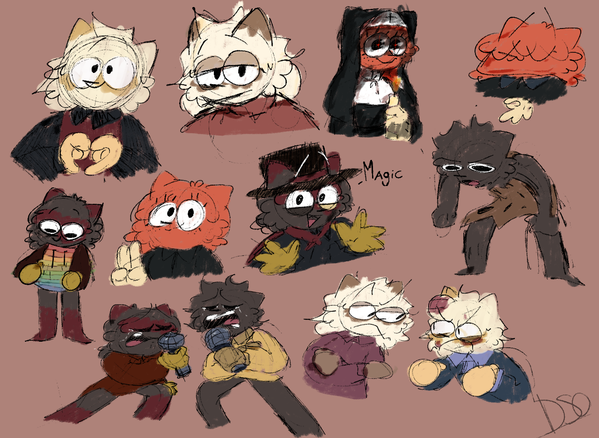

Trabajos de Animacion
Mis Proyectos "animados" los inicie desde el 2020, usando el Programa FlipaClip y de ahi de poco en poco yendo a probar con otros programas, aparte de los de movil, llegando a los de Computadora (Como Adobe Animate, Pincel 2D, Clip Studio Paint, FireAlpaca, Krita y otras mas que ni me acuerdo), hasta establecerme con solo Clipstudio paint, que es el Programa de Animacion y Dibujo que mas uso aparte de Krita.
Con el paso de los años, las animaciones originales las eh dejado de hacer para darle prioridad a otros proyectos (El Dibujos y LaPrision). Lo que si eh hecho mas seguido han sido ilustraciones como por ejemplo en mi estudio de Tecnico Profesional haciendo algunos logos y dibujos para el proyecto, algo aparte de eso eh estado conviviendo con otros artistas y animadores para compartir mi arte con mas gente.
la animacion poco a poco la eh dejado de utilizar (al igual que la rotoscopia) porque es tardado, y para videos como el dibujos demoraria mucho y pues youtube no es tan bueno que digamos xd, pero si eh dado algunos experimentos con animacion y de diferentes estilos (Animacion por celda, Rotoscopia, Animacion3D) en cada video para dar algo nuevo cada tiempo para la gente cada que pueda.
